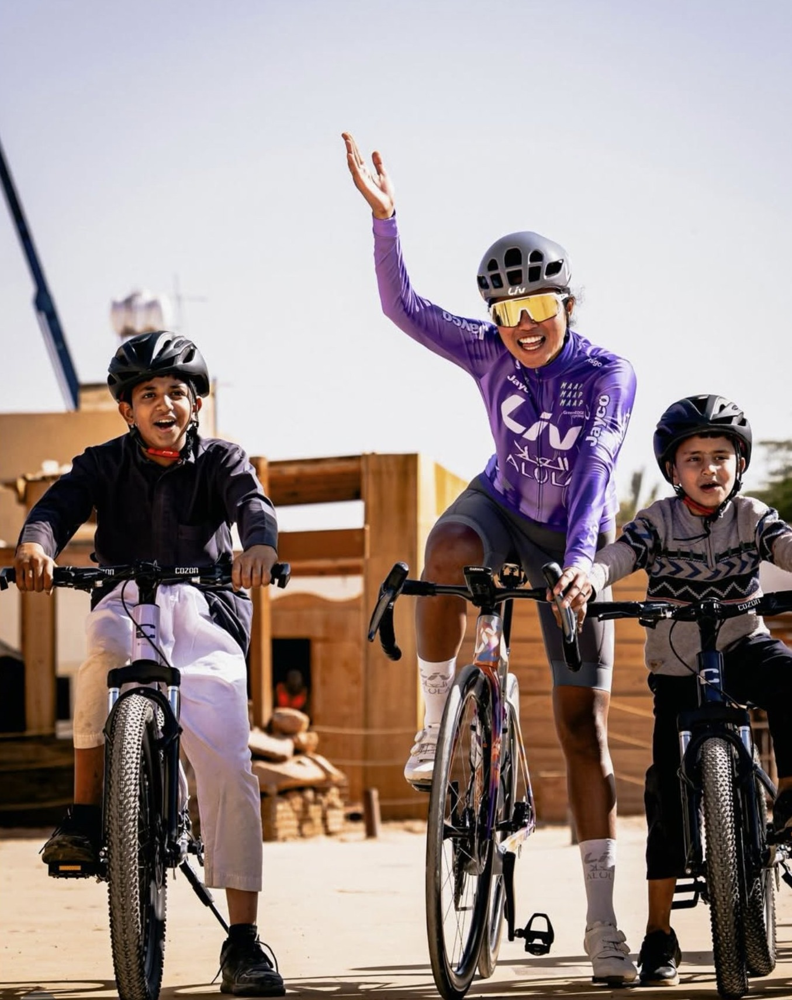

№ 01 · Désert d’AlUla
Le sport comme langage universel
Arabie Saoudite, janvier. Transmettre, guider, puis s’effacer. Ici, ce n’est pas la performance qui compte, c’est la confiance qu’on donne — et l’indépendance qui éclot, coup de pédale après coup de pédale.
Donner les outils. Allumer l’étincelle. Regarder partir.